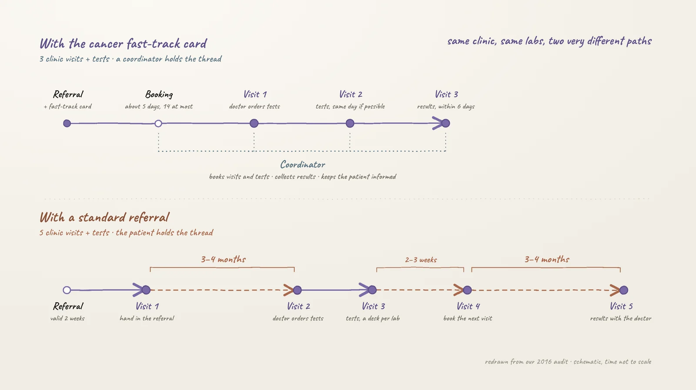
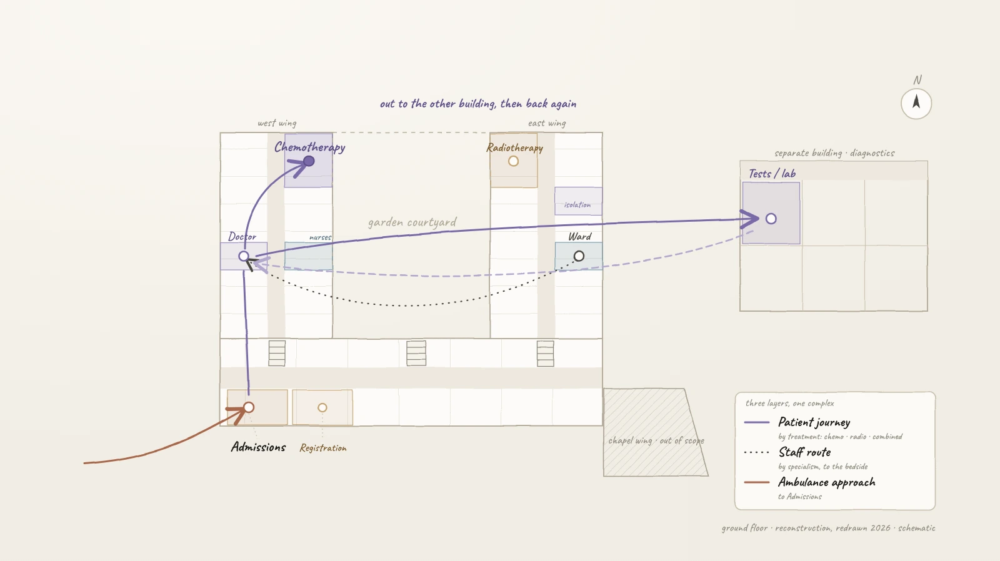
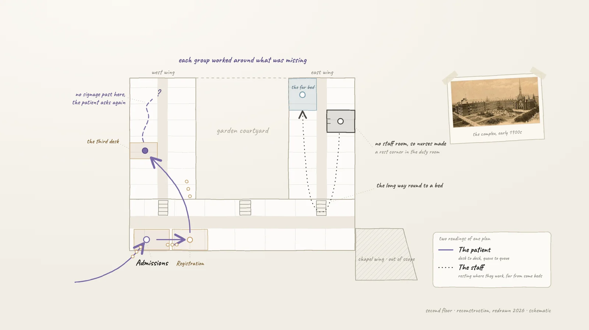
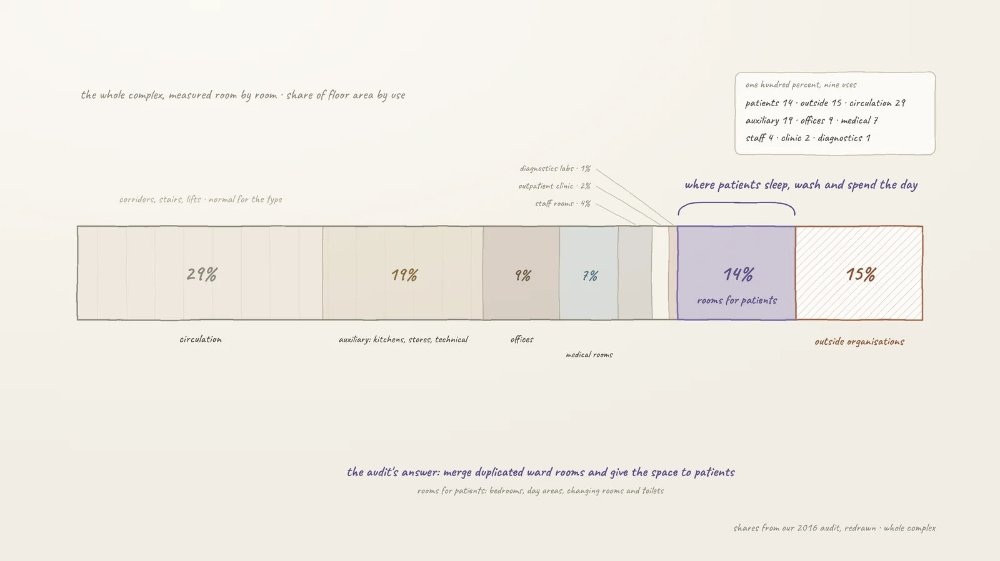
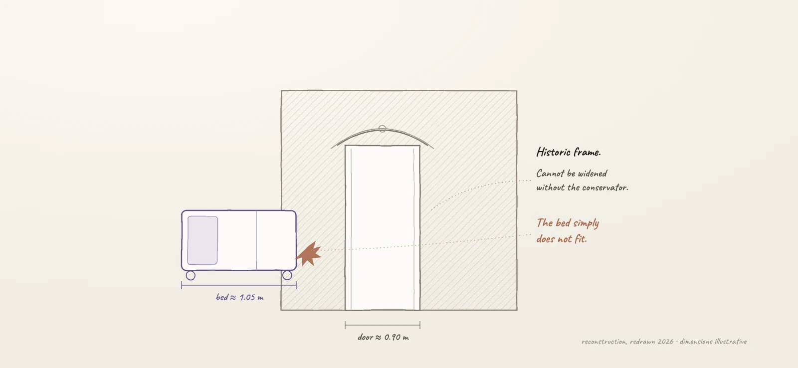
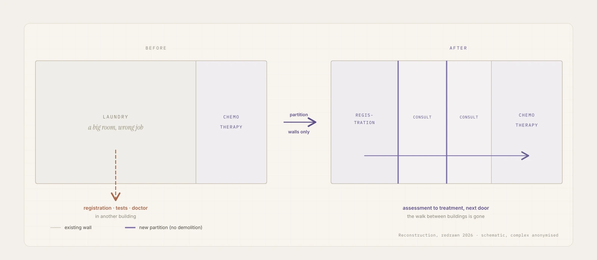
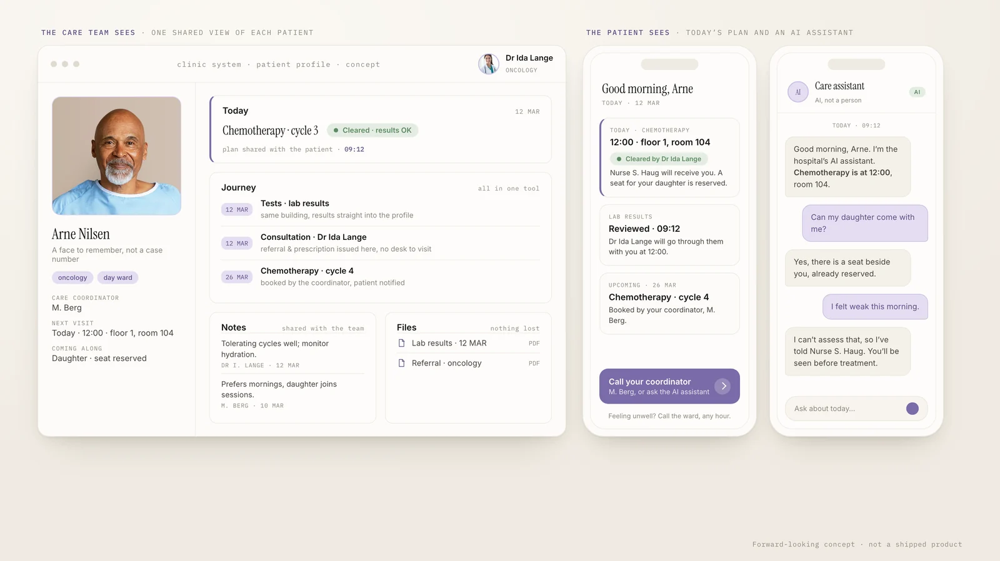

Two patients came to the same clinic, and only one had someone organising their care
We mapped what happened to a patient between the GP's referral and the start of treatment. The route depended on one thing: whether the patient held the national fast-track card for suspected cancer.
With the card, a coordinator took over from the moment of booking. The coordinator arranged the appointments and tests, collected the results and told the patient what came next. The first appointment came after about five days, and after 14 at most. Before treatment began, the patient came to the clinic three times, plus any visits to the labs.
Without the card, the patient did that organising alone. The referral was valid for two weeks, but the wait for an appointment was three to four months. So people had to bring the referral in or post it just to keep their place. After the first consultation they took a referral to each lab themselves, came back for the test and waited two to three weeks for the result. Then they booked the next appointment, often three to four months away. That added up to at least five visits.
The fast-track also guaranteed shorter waits, so the coordinator was only part of the difference. Still, the comparison sets out the question behind this case: which parts of this organising work should a hospital carry itself, and which does it leave to its patients?

For three months we watched how the hospital worked on different days and at different hours
The hospital commissioned an audit of its finances, staffing and clinical work. My part was the clinical space: how the building worked for patients and for staff. The team brought together architects with HR and finance specialists.
I observed clinics, wards, labs and waiting areas on different days and at different hours. I carried out many interviews myself: with patients, including palliative patients, and with physicians and nurses.
We mapped movement separately for each group. Patients by treatment: chemotherapy, radiotherapy or both. Doctors by specialism. Nurses between their station and the beds. Ambulances on their way to Admissions. Then we worked out the patient pathways together with physicians and nurses, who took an active part in this work.

Patients and staff had each found ways to cope with what the hospital lacked
Some of the most useful evidence came from small workarounds. Many patients ate their meals on their beds, because their rooms had no table and the canteen was for staff only. Wards had few places to spend the day or sit with family. Many toilets were kept locked.
Staff improvised too. The hospital had no proper staff rooms, so nurses made their own rest corners inside the duty room, with a sofa, a small table and kitchen equipment behind a partition. In one duty room this took more than a third of the floor and cut the daylight at the desks.
I read these corners as information about the service. They showed needs the building had never provided for, so they went into the audit as findings about the hospital. Nobody working there was to blame for them.

The hospital said it had no room, so we measured every floor
We colour-coded every room on all five floors by what it was used for. That gave the hospital one picture of how its whole area was used.
Corridors, stairs and lifts took 29% of the complex, which is normal for a corridor hospital of this age. The rooms where patients slept, washed and spent the day took 14%. Outside organisations used 15%, and kitchens, stores and technical rooms 19%.
The pressure showed in the wards. Some rooms held six beds, where national rules allow five. Many beds could not be reached from three sides, which the same rules require so that staff can work around a patient.
The measurements also showed where space could come from. Divided wards each kept their own nurses' station, treatment room and staff area. Merging some of these would free rooms for patients and allow fewer beds per room, inside the walls the hospital already had.

We grouped every finding by the people it affected
The audit was written for the people running the hospital, so each finding names who feels it:
- Outpatients: no central registration. Clinics sat on two floors and almost every lab had its own desk, so people struggled to find their way
- Inpatients: too many beds per room, too few toilets, no day rooms and nowhere to eat
- Staff: no proper staff rooms, and nurses' stations placed far from some beds and out of sight of the ward entrance
- Everyone: no clear zones for the public, patients and staff. Wards worked as through-corridors, and there were no plans or signs to help people find their way
- The building itself: a protected monument. Most ward doors were too narrow for a bed, and no wall could move without the conservator's approval

For patients near the end of life, a few metres could decide how they spent the day
One ward cared for many palliative patients. I talked with them about their week, their room and the distance to the bathroom. Sometimes, by my next visit, that person was gone.
I carried those conversations through the audit with particular care. For someone that ill, the distance to a toilet, or a chair for a relative beside the bed, is a large part of the day. We wrote those needs down as carefully as the floor areas.
Five decisions turned the findings into a plan the hospital could act on
With the evidence in one place, the question became which barriers to remove, and in what order. These are the decisions and the reasoning behind each one.
- Organise by who uses the space. Fixing problems one by one would have left their cause in place. So the plan divided the hospital into access zones for outpatients, inpatients and visitors.
- Work with the original plan. The protected walls could not move, and the original U shape already suited the job. Bed wards stayed in the wings, surgery and treatment formed a medical core, and admissions, clinics and diagnostics shared one public area.
- Bring outpatient care together. Outpatients had the most desks to find. We proposed all clinics on one floor, with one central registration that also served diagnostics.
- Leave the hospital a real choice. Admissions could be reorganised where it stood, or moved to the pharmacy's location, where ambulances could manoeuvre more easily. We drew both options for the hospital to decide.
- Prioritise the change that asks least of the building. Before each chemotherapy session, patients walked to another building for tests, back to the doctor, and only then to treatment. A large room right beside chemotherapy held the hospital's laundry, which could move to an outside provider.
With partition walls alone, that room became registration and consulting rooms next to chemotherapy. It needed no demolition, so the hospital built it almost at once, and the walk between buildings ended.
The hospital then used the audit in its application for renovation funding, and the funding was granted.

What I would keep, what I would change, and where AI could help today
Ten years later, three habits from this project still shape how I work.
- Put observation and measurement side by side. Interviews and observation showed where people struggled. Measuring the plans showed why, and gave the hospital evidence it could use.
- Treat workarounds as research. A rest corner in a duty room or a meal eaten on a bed shows an unmet need more precisely than a complaint does.
- Name what cannot change. In a protected building some walls stay. Saying so early leaves the team free to redesign flows, functions and zones.
If I ran this project today
I would make two changes. I interviewed patients, but we worked out the pathways with physicians and nurses. Today, patients and families would take part in designing them too. And I would measure the effect: visits before treatment, days from referral to first appointment, and what patients and staff report, before and after each change. I have no before-and-after figures from 2016, so I describe the changes and make no claim about their measured effect.
I would also start any AI work from the finding about the coordinator. The useful question is which parts of a coordinator's work software can support. An AI assistant could tell a patient in plain language where to go, what to bring and what happens next. It could show the coordinator which tests and results are still missing.
Some things stay with people: test results, prognosis, treatment decisions, and anything a patient says about how they feel. In the concept below, the assistant says that it is AI and passes those moments to a named nurse or doctor. Before any patient used it, I would test it with patients, families and staff, and check its answers for mistakes. I work on the same questions in Between the Lines, my own journal with an AI companion.

The coordinator showed what care looks like when someone holds the whole path.